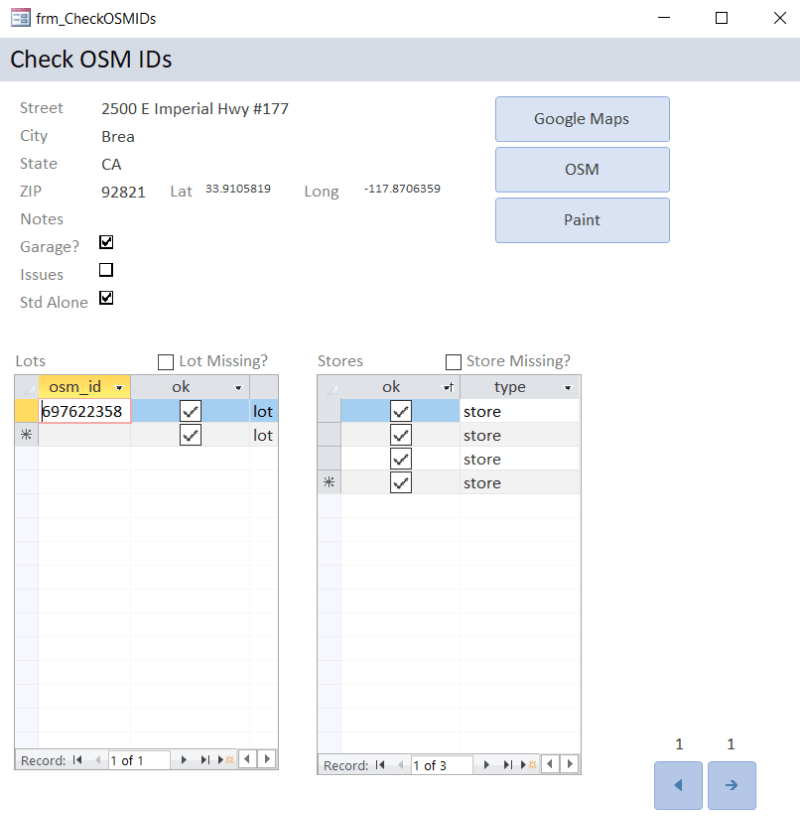
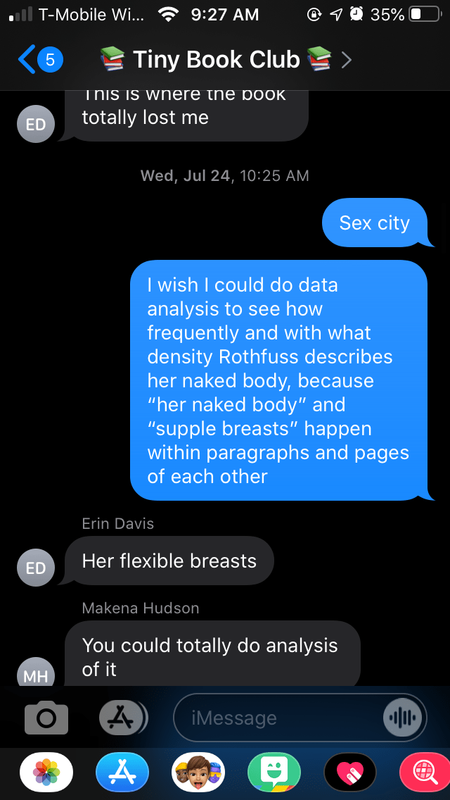
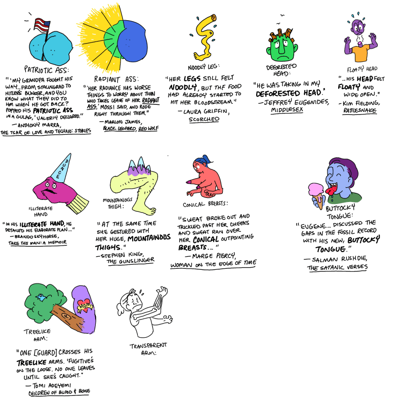
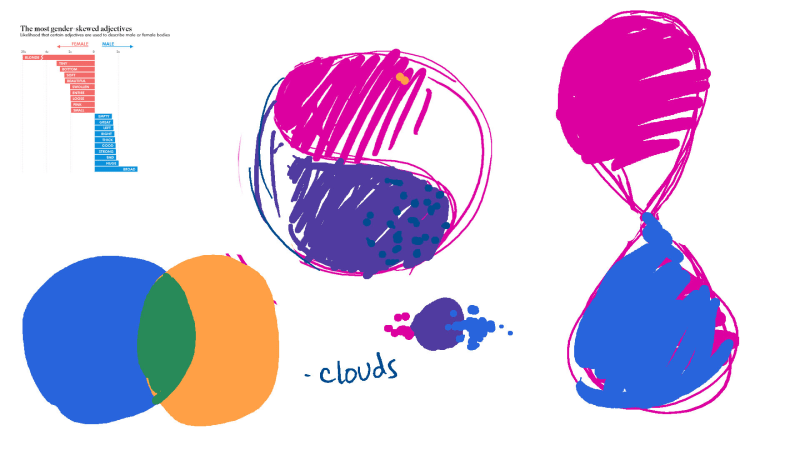
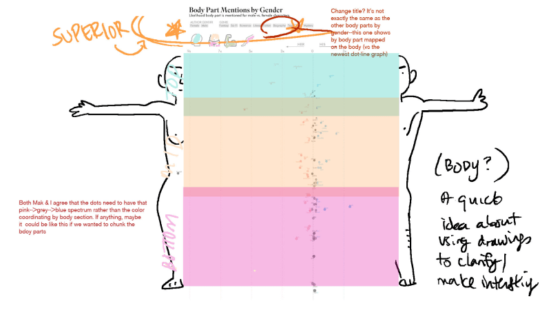

A project from the The Pudding
Behind the Scenes
The Courage (and Disappointment) of Pitching a Visual Essay
I’m published! In the Pudding! Check it out here!
Getting to this point was downright terrifying. I’d been posting on my lil’ blog and on Reddit for a while, but it was a huge step to go out into the world and find someone that would pay me for a project.
For a hyper-anxious person with a need to do everything The Right Way, the lack of information around how to sell my work was disheartening. There’s a ton out there on how to pitch novels and newspaper articles, but not much at all about data visualization. To hopefully shed some light on how I went from an idea to a published article, I thought I’d share two of my own pitches to the Pudding—one successful and one not—and how I created them.
A quick note on the actual experience of pitching. I was terrified. I’m self-taught. I do not do data visualization professionally. I do this as an evenings-and-weekends hobby. I did not (do not) know if my work was (is) strong enough to stand on its own, especially on a site like the Pudding. Their other freelancers are people like Shirley Wu, for chrissakes. I assumed I’d hear a “no,” but of course I really, really didn’t want that outcome.
Both times I sent a pitch email to the Pudding, I obsessively checked my phone until they responded. Every email notification made my stomach flip, and I wasn’t sure if it’d be better to hear a hard no or to never get a response at all. Eventually I started leaving my phone in my car when I went to work because it was such a horrible distraction.
Thank you to my friends for putting up with all my, “Do you think they’ve seen it?” “What if they hate it?” “What if they hate me?” “Oh god what I have done?”
Pitch #1: Trader Joe’s Parking Lots
I want to discuss my unsuccessful pitch first. You can read the whole thing
I wanted to see if Trader Joe’s parking lots are as terrible as they’re made out to be. If you’re not lucky enough to have a Trader Joe’s in your area, let me explain: it’s a tropical island-themed grocery store with amazing deals on great food. They intentionally under-invest in their parking lots so that they can spend more on other aspects of the store. Getting a spot in a Trader Joe’s lot can feel akin to a middle-class demolition derby.
As I was leaving Trader Joe’s one day, I realized I felt similar parking-lot frustration at my local Target and Fred Meyer, too. Are Trader Joe’s parking lots really that bad compared to other grocery stores?
Not knowing how to determine what a “bad” parking lot was, I decided to start gathering what data I could and figure out the story later. This is almost always the approach I take, and it often works. It’s hard to know what direction a story will take until you can get a little data to look at.
I scraped a list of all Trader Joe’s locations from their website, and started looking them up one by one in OpenStreetMap to see if someone had already mapped the store and its parking lot. I added the missing ones to OSM myself. I used a Microsoft Access database to keep track of which parking lots and which buildings were relevant to my project, and which weren’t.

This amount of targeted activity aroused the suspicion of someone on the site, who messaged to ask if I worked for Trader Joes!
I did this for all 200-ish Trader Joe’s in California, and then I did it for 100 randomly chosen Safeway and Whole Foods locations as well.
If this sounds like an enormous amount of work, well, it was. I’d fallen into a trap of my own making.
Even after a solid 40 hours of mapping parking lots, I still had no idea what made one good or bad to park in. I kept collecting more data points--Google’s average wait time was one—in the hopes that something would jump out at me, but nothing did.
The data I collected didn’t show much of a difference between Trader Joe’s and the other stores. The best thing I could pitch was that the idea that Trader Joe’s lots are terrible has become some sort of in-joke or meme. Even though my results weren’t that interesting, I’d sunk so much emotional energy into the project that I felt I had to pitch it. To do that much work just to let it rot on my hard drive felt too demoralizing to consider.
Of course, they rejected this pitch on the grounds that there really wasn’t much of a story to it. They were really kind about it, and later told me they prefer to reject people in a sympathetic way, with considered feedback.
Thanks for pitching us! We just discussed this idea in our editorial meeting, and everyone agreed that it's a great topic! We were a little more hesitant about it after seeing the data though. Since it seems like Whole Foods has a pretty similar predicament in terms of size and wait time, perhaps there is a better way to focus in on Trader Joe's by itself?
For instance, assuming Trader Joe's lots are actually bad, is there some way to look at why that might be? Perhaps they are buying cheaper lots where flow of traffic will be more awkward? Or maybe they are misusing their parking lot space somehow?
Basically, we love the hook and think you're on the right track, but we'd like to see a stronger narrative coming out of the data. If you're interested in reframing and re-pitching the piece, though, you should be aware that we don't have the bandwidth to take on any new freelance pieces until October-ish. So we encourage you to bring this back to us then if you move forward with it! Or send something else!
It stung, but on reflection it made sense. If even I wasn’t convinced of the value of what I was pitching, why would they be? What point was I even trying to make?
In retrospect, I think I jumped right into pitching this article because it felt like the first idea “big” enough for the Pudding. It involved an enormous amount of data collection, and I amassed a dataset I’m almost certain nobody else (save probably Trader Joe’s themselves) has. I mistook hard work and unusual data for an interesting article.
I don’t want to abandon all the work I did and I’m still interested in this project. I do want to get back to it (…eventually…) and finish up data collection for all 380-ish Trader Joe’s locations. Although there probably isn’t a compelling story to tell with the data I have, I do think it would make a pretty neat poster!
Pitch #2: Gendered Descriptions in Literature
On to the successful pitch. You can read the whole thing
Unusually, I have a written record of where the idea for this one came from. Our book club was very annoyed with overwrought descriptions of a fairy in Patrick Rothfuss’s The Name of the Wind. My friend Liana had the idea to analyze how exactly he describes her body:

(This screenshot is from Liana’s phone)
The idea was too good to pass by, and we all loved it. I decided to expand on it to see how authors in general describe bodies, and we were off to the races.
Immediately, this idea felt very different from the Trader Joe’s parking lots one. No matter the results, there’d be something interesting to write about. Either rote stereotypes are indeed played out in literature, or Patrick Rothfuss’s writing is exceptional in its poor treatment of female bodies. (Spoiler alert: it’s the former.)
All the same, I wanted to get a solid dataset to analyze before pitching anything. If I’ve learned anything from life, it’s to have all your ducks in a row before presenting them to someone you want to impress. I wanted to tell the Pudding a story, not tell them that I would tell them a story 😊.
To get started, I grabbed a few pages of The Name of the Wind. A bit of Googling brought me to the CoreNLP demonstration page (as of this writing unfortunately offline), where I could play around with natural language processing (NLP). Just a few demo runs were enough to convince me that extracting body parts, owners, and adjectives was completely possible.
I then moved on to using the spaCy NLP parser in R to extract body parts more efficiently. Before this project I was completely unfamiliar with NLP. I definitely didn’t sit down with a plan and just type out some code and boom, results. Getting my code together was a process of trial and error – feeding the parser a few simple sentences, seeing what came back, tweaking it, feeding it more sentences, and so on.
Once I got my code working smoothly and all my books parsed, the members of our book club (all 3 of us) threw tons of ideas out, most of them bad, and developed them all. Here’s a few random sketches from that phase, none of which made it into the pitch.



Once we saw everything, we could strip away what wasn’t compelling until we reached what felt like a concise, tight draft that covered everything we thought was important.
This took some time. I have at least four full drafts saved in Word, but that doesn’t count the Google docs, the email chains, and the text threads. This was probably overkill, but the idea felt really solid, and I didn’t want to do it a disservice by sending over a flabby pitch.
Of course, this pitch did end up being successful. I still panicked for the couple weeks it took the Pudding to get back to me, but I felt much better about what I had sent this time than the first time. The difference, ultimately, was that I thought our findings were genuinely interesting. I could get behind the article without reservation, so it seemed more likely that the Pudding could, too.
Looking Back
How do I wrap this up? I don’t really know! Maybe with some lessons learned:
- If your idea isn’t really compelling to you, it probably isn’t compelling to anyone else either
- Work on a project you genuinely love, because it is going to take a lot of time and effort. My article took a year from initial idea to publication.
- Be clear on what your essay/pitch is trying to achieve, especially to yourself.
- Hard work != good work
- All your previous work is building up to something. Taken individually, each little visualization I’ve done didn’t feel super important. Taken collectively, I actually learned a ton of skills—technical and not—that really helped in executing bigger, important-feeling projects.
- Starting a blog was a really good idea. It’s kept me motivated to actually finish projects instead of abandoning them when a more exciting idea comes along. The Pudding also said seeing a record of my work made them more confident in saying yes to my pitch.
- Everything is easier with friends :)
- Working with a professional illustrator is pretty neat! I’ve been friends with Liana for 18 years but never worked with her professionally, and it was really fun to see how she took my ramblings about data and made a visual essay!